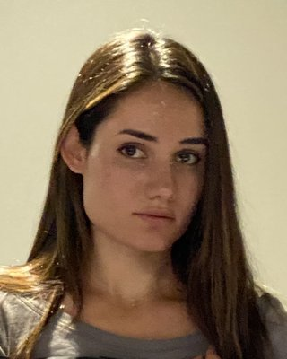

I'm making an artifact of what I'm working on and thinking about.
I'm externalizing more to give more surface area for growth and connection.

I'm Allison.
Studies: Mathematics at Columbia (BA), Electrical Engineering at Stanford (MS)
Explored Interests: abstract math (especially formal logic), computer science (verification, computability, data representation), philosophy (especially metaphysics), and finance and history of finance.
Hobbies: tennis, skiing, reading literature and philosophy, hiking/wandering in nature/cities
Fun facts: My middle name is Kiran, which I'm pretty fond of. Apparently it is inspired by "little dark one" in Irish (Ciaran) and "thread of light" in Sanskrit (kirana). I like that sunbeam or "thread of light" has both gentleness and intensity to it. I also like the duality of the dark and light name inspiration; it also matches my hair that grows in almost black and then bleaches in the sun. I also have trace Punjab and Irish heritage, so I guess it's fitting in that way as well. I'm mostly of Swiss/German descent though.